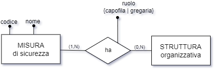
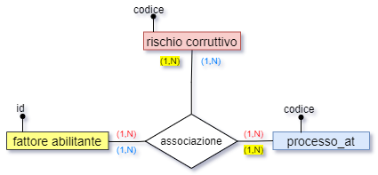
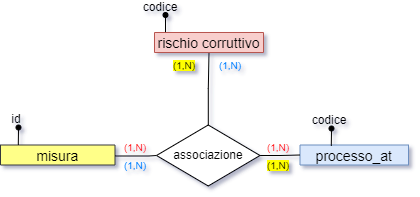
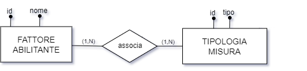
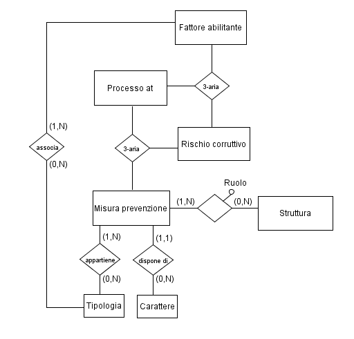

Una misura deve avere una struttura responsabile della messa in atto della misura stessa, quindi la misura è in relazione con la struttura:

Una misura di sicurezza ha almeno una struttura organizzativa e può averne più di una; mentre una struttura ha zero o più misure di sicurezza (relazione molti-a-molti).
Il ruolo della struttura rispetto alla misura è un attributo della relazione tra la misura e la struttura.
Prima di entrare nel merito dello schema E-R atto a tradurre questa parte del modello, è opportuno fare un esempio, in modo da capire esattamente qual è la situazione che dobbiamo rappresentare.
Poniamo di dover esaminare una misura di sicurezza in rapporto allo scenario.
Per poter fare un’analisi del genere, è necessario esaminare gli attori coinvolti, che nel caso specifico sono: processo, rischio, fattore abilitante, misura di sicurezza e tipologia di misura.
Esempio:
| PROCESSO | RISCHIO | FATTORE ABILITANTE | MISURA | TIPOLOGIA DI MISURA |
|---|---|---|---|---|
| Concorsi per PTA | Conflitto di interesse | Inadeguata cultura della legalità | Linee guida | Regolamentazione |
Quella riportata sopra è la soluzione che bisogna ingegnerizzare: un processo (CONCORSI) è connesso a una serie di rischi (p.es. CONFLITTO DI INTERESSE), i quali sono a loro volta connessi a una serie di fattori abilitanti… prima di procedere oltre, ricordiamo infatti che il processo organizzativo, censito a fini anticorruttivi, è legato sia al rischio sia al fattore abilitante attraverso una relazione ternaria:

Quindi il processo è associato a uno o più rischi, che a loro volta sono associati a uno o più fattori abilitanti; ma ogni rischio, nel contesto di un dato processo, deve poter essere associato anche a una o più misure di prevenzione, ciascuna delle quali ha una sua tipologia ed un suo carattere.
Ciò delinea una ulteriore relazione ternaria tra processo_at, rischio e misura di prevenzione/riduzione:

Pertanto, la relazione diretta tra rischio e misura va specializzata con una relazione ternaria tra il rischio, il processo e la misura stessa.
Ciò significa che, da qualunque entità si parta accedendo alla relazione, sarà possibile risalire alle altre entità coinvolte.
NOTA BENE
In realtà quelle descritte nell’analisi come relazioni semplici sono già relazioni ternarie e quelle descritte come ternarie nel nostro schema sono tutte relazioni n-arie, in quanto quasi ogni entità dello schema è debole dipendendo dalla rilevazione, e così pure le relazioni stesse.
Tuttavia, nell’analisi trattiamo tutte le relazioni semplici tra entità come se fossero binarie (piuttosto che ternarie come sono in realtà) in quanto l’esistenza di un ulteriore ramo verso la rilevazione è un elemento ricorrente nello schema, cioè comune a tutte le relazioni, e quindi può essere spostato in background nell’analisi descrittiva e, in definitiva, dato per scontato.
Nell’analisi descrittiva, pertanto, il riferimento alla rilevazione normalmente verrà omesso, mentre i vari passaggi daranno evidenza a entità specifiche, per cui si parlerà di relazioni semplici, relazioni ternarie, relazioni 4-arie etc. piuttosto che di relazioni ternarie, relazioni 4-arie, relazioni n-arie.
In questa fase dell’analisi, ci basti dire che anche la misura presenta un ramo verso la rilevazione, in quanto anche le misure possono essere storicizzate in una rilevazione.
Il fattore abilitante, dal canto suo, viene associato alla misura tramite la tipologia della misura stessa, che è in relazione diretta con il fattore abilitante stesso.

Riepilogando: oltre alle normali relazioni con le entità forti (tipologia, carattere) abbiamo:
due relazioni ternarie indipendenti ma collegate tra loro tramite il rischio corruttivo;
una relazione indiretta tra la misura ed il fattore abilitante tramite la tipologia della misura;
una relazione diretta tra la misura e la struttura, che ha un attributo specificante il ruolo {capofila | gregaria} che la struttura ha rispetto alla misura.
